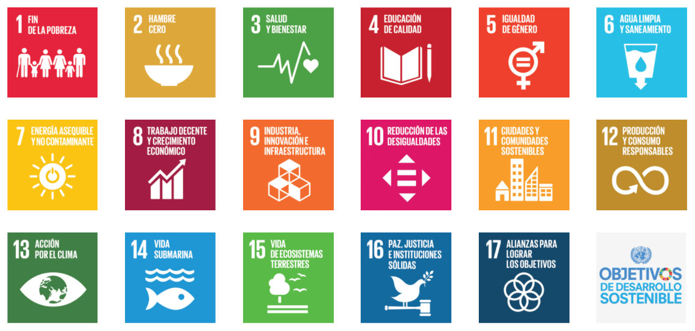

La intención educativa de la situación de aprendizaje “Viajamos por Asturias” es que el alumnado conozca la ubicación, cultura, costumbres y curiosidades de Asturias mediante la investigación, observación y experimentación. Este enfoque contribuye al desarrollo integral ya que permite que los niños y niñas desarrollen habilidades cognitivas, socioemocionales y de autonomía, fomentando la curiosidad, la creatividad y el pensamiento crítico así como a desarrollar actitudes de cuidado y respeto por el medioambiente.
Esta situación de aprendizaje se vincula con los siguientes Objetivos de Desarrollo Sostenible 2030:
- ODS 4: Educación de calidad.
- ODS 13: Acción por el clima.

Además, contribuye a los Retos del siglo XXI, como fomentar la conciencia medioambiental, la ciudadanía global y la capacidad de investigación y uso responsable de tecnologías digitales.